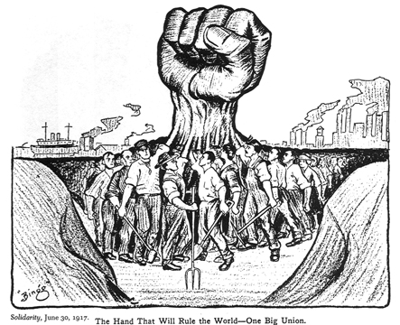

Hallo, Perkenalkan Aku
qwertyuiopasdfghjkkl;zxcvbnm,.%QWERRTYUIOPLKJHGFDSAMNBVCXZ

qwertyuiopasdfghjkkl;zxcvbnm,.%QWERRTYUIOPLKJHGFDSAMNBVCXZ
Impact Fest
Buat hall of fame pada website bem, jadi teknisnya setiap impact fest, para staf yang mendapatkan sotm akan di taruh di web bem yang nantinya akan di kelompokkan per periode.

Grand Launching
Jika kepanitiaannya sama seperti tahun ini, aku memiliki ide untuk adanya drama, jadi agar para peserta dan hadirin tidak bosan sekaligus agar para staf baru bisa saling mengenal dan lebih bonding lagi

Skulkad
Jika memang memungkinkan aku pengen banget SKULKAD diadakan secara offline agar para calon staf bisa lebih merasakan atmosfir yang ada dan para mentri bisa mengetahui kemampuan para calon staf lebih detail
